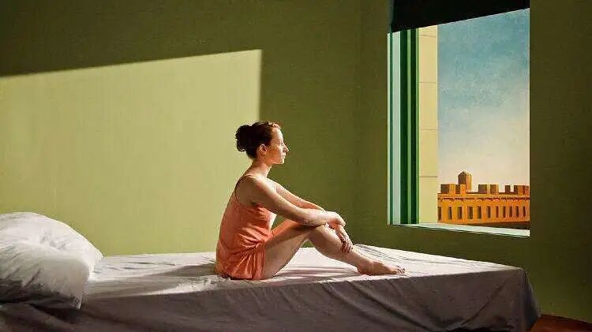

分享｜秋秋私藏的9部电影，画面美到不能呼吸！
和 我 一 起 治 愈 生 活

图：@网络
文：@秋秋
大家好，又见面啦～
我是秋秋。今天要给大家分享几部画面绝美的电影，每一帧真的都想截图成为壁纸的那种！
从色调，到构图，完全就是我的理想型。学习拍照、调色很有帮助。类型包括：法式复古、日式清新、温暖治愈、港风情绪...
话不多说，我们就开始啦～

1.绝代艳后

剧作家萧伯纳曾说道，“服装创造了人类，服装也注定创造明星。”
所以服装对一个剧的影响真的超级大！
这部电影曾经获得《第79届奥斯卡金像奖最佳服装设计奖》，每一帧画面，都是无法想象的美。


美轮美奂的华服，如茵的草地喷泉，杯盏交错的衣香鬓影，风光秀丽的宫殿，奢华名贵的水晶装饰，古典梦幻的法兰西气息……（网络评论）
每一帧都是对眼睛的温柔。
2.天使爱美丽

如果你很喜欢法式风情的电影，那么我非常推荐这一部。
整个影片的色调都是明亮的红色和绿色，但是搭配起来非常和谐和复古。女主古灵精怪的性格也很讨喜。


而且我觉得这部电影和《这个杀手不太冷》的画风还挺像，女主的头发都是那种短短的，很有灵气。
3.海街日记

这部电影的画面偏小清新，整体是那种非常治愈的蓝色色调。
我上次去青岛玩，就是按着这部电影来调的色。不知道大家知不知道胶片风，就是这种感觉～


因为这次是推荐画面色调、构图超美的电影，所以我就不讲解剧情了。大家可以自己去看一下～
4.小森林

我觉得这部电影真的是，喜欢田园风格的人必看。
故事的女主角也是厌倦了大城市的生活，向往着宁静的心灵栖息地。
感觉看的时候有点李子柒的那种感觉，但是这个更偏小清新风格....


每一帧都好像是一场大雨之后的鲜亮，看着图片都有种能嗅到那种自然、舒服的味道。
5.成为简·奥斯汀

这部电影是名人传记类型，故事本身没有太多的跌宕起伏，但是引人入胜。
只要你看了一眼，就想一直一直看下去。
整个影片的色调是乡村复古风，优雅而毫不张扬，你可以在影片中体会“英式小楼和古香古色的古城堡”，还有“令人目不暇接的乡间舞会和英伦岛上独好的风景”。


如果你想感受和《绝代艳后》不同的英式风格，那么就看这部电影吧。
6.雪莉：现实的愿景

这部电影是绝世名画100%还原，也许你没有看过这部电影，但是这个画的风格，你一定一眼就能认出来。
不知道有没有小伙伴喜欢这种风格？
之前还特别流行过一段时间的莫兰迪色系，就是这种。
不需要特别高饱和度的颜色，只是淡淡的就很有气质。


我记得以前我朋友学摄影，都是会把这部电影的调色给分离出来。然后调色的时候就会按照这个进行～
学习拍视频当然也要这样，好的电影色调都要学习、保存。至于怎么给电影调色，又是一个非常好玩的话题。
7.重庆森林

《重庆森林》这部电影是我大学的时候看的，那时候其实还挺流行港风的。包括女孩子穿衣服，都会买格纹衬衫（大大的那一种）；阔腿牛仔裤，拖地的那一种....
港风偏暗色调，会有种痞痞的感觉。
但是，又很有力量。所以喜欢这种风格和色调的，这部电影必看～


如果你不能区分港风和其他风格，就去想一下张国荣、林青霞、王祖贤这些名字，80年代、90年代的事情，顿时就有感觉了...
8.布达佩斯大饭店

如果你想学习对称式构图和感受非常少女的配色，那么就看这部电影。
它的每一帧都粉嫩到出泡泡的感觉，而且里面的主角不是少男少女。
我在网上找这部电影的图片已经很少了，但是我找到一个插画师（@三藐三菩提）画的作品，非常棒，分享给大家。


我也是第一次看到这部电影就被吸引了，毕竟粉色也不多见。
如果你们吃下这颗安利，我保证你们在审美上会有很大提升...
9.情书

这部电影的剧情真的是强推！而且是属于岩井俊二代表风格（剧透：看完能哭的那种）。
影片拍摄风格上，有很多大的远景和跟拍，适合冬天的时候和男朋友一起窝在床上看（没有男朋友的等有男朋友的时候再看，要不然一个人哭的稀里哗啦的😭）。


整个电影的色调是日系风格。
回忆的剧情大多采用温暖的棕色色系，而现实的都是色温偏低的冷色调。一暖一冷表现了两个女生不同的情感状态。
“——你 好 吗 ？”
“——我 很 好 。”
最后我想说，其实看电影，不仅仅是要看剧情，或者说，我们以往的教育，都缺乏审美的教育。
小时候，我们班经常会组织一起看电影，但都是一些爱国主义教育片，看完还要写观后感，根本没有提及对画面、色调、镜头语言的学习。
等稍微长大一点，和同学、男朋友去看电影，也是什么火去看什么。只会跟着剧情去评价一部电影的好坏。
而我是在入行了编导之后，才学会了拉片子，才知道，经典的电影，每一帧都很重要。
所以这9部提升审美的片子，真心推荐给大家。希望大家能够在色调、拍摄上有新的发现和感悟啦～
如果觉得我的推荐很认真，记得点个“在看”（或者留言哦）。
其他文章推荐：

原创文章，转载请告知本人并标注来源
工作联系：17865514429 （微信）
请注明来意 :)
@微博：秋秋一日甜
喜欢记得星标，让我们一起成长